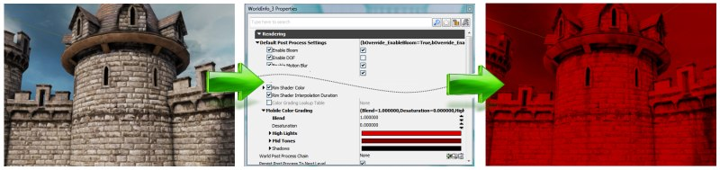
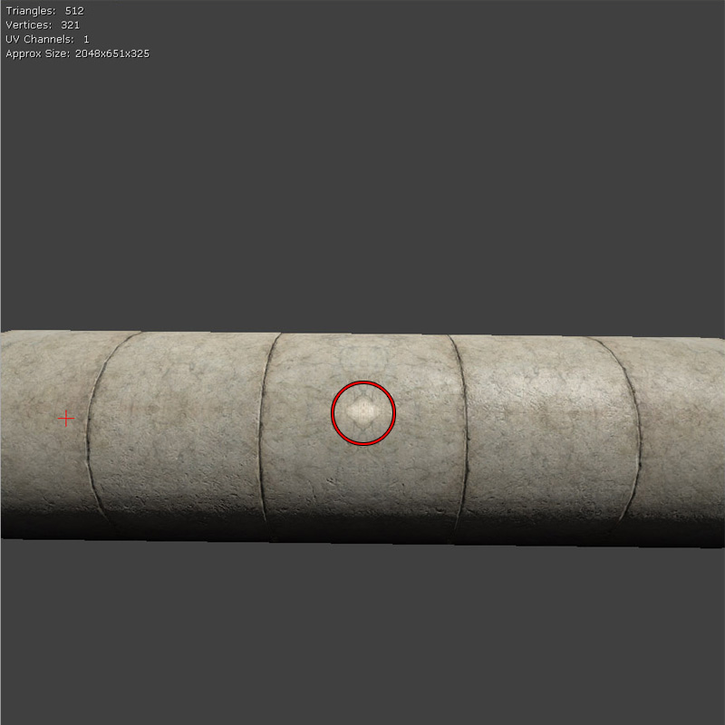
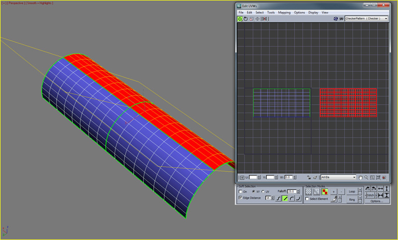
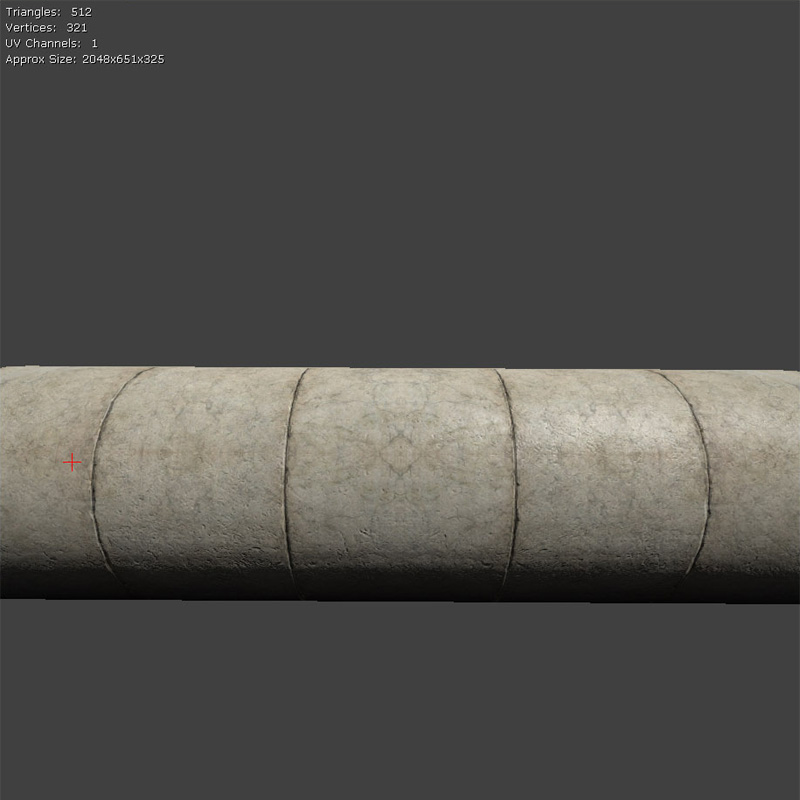
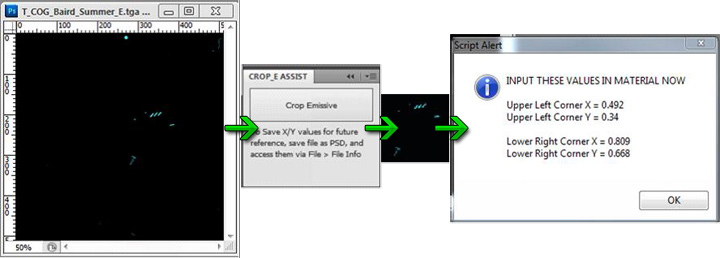

虚幻引擎内容创建博客
概述
这是个类似于博客的试验性页面，允许用户以简单方便的方式共享精华信息，不必担心一旦它更新后就过期的情况发生。和一般的文档不同,博客不会过期 - 唯一的危险是被丢弃。我们的希望是通过把博客替换为我们内部分享帮助和技巧的主要方式来达到期望的目的，从而把邮件替换为该页面中内容创建相关的内容。从长远角度来讲，如果每个人包括授权用户在内都可以向该博客提供内容、帮助我们改进我们的文档、通过这种方式共享知识，那么这将会是很好的。
为什么使用博客？ 主要目标是降低共享有用的信息的难度，使得可以很容易地和很多人共享更新。目前这种形式的更新非常容易，鼓励快速分享新加的功能、新发现的知识或者仅是分享通用的 帮助&技巧。
发表什么信息内容? 几乎可以张贴任何信息，只要对其他人有用即可。尝试了一次优化，但是没有奏效？ 那么请稍微详细地告诉我们为什么没有奏效。显然，如果优化奏效也可以告诉我们。;-) 找到了个有用的插件或工具? 请张贴个条目。想知道加速导入过程的好方法吗？ 请发表相关主题！
为什么不是真正的博客？ 大部分原因是由于技术限制，如果该形式实行的很好，我们可能会尝试克服这些限制。
我们的计划是定时查看该页面，并确保这里所有的 帮助&技巧 在实际文档中反映出来。
博客文章
最近的文章
2012年3月
在移动设备平台上通过使用蒙板贴图后改进了贴图混合效果
由Gerke Max Preussner于2012/03/21发布
从2012年4月的经过QA审核的版本开始，在将蒙板贴图作为混合源使用之后移动设备平台上的贴图混合效果发生了微妙的变化。内容开发人员可能不得不更新现有的材质，因为这是一次重大更改。
以前，只有第一个MobileDetailTexture可以在这种模式中使用，而蒙板贴图的alpha通道提供了确定细节贴图将会有多少与基础贴图进行混合的混合系数。
现在可以为贴图混合使用所有三个细节贴图。在蒙板贴图的alpha通道不再使用后，它的RGB值现在可以确定混合系数。将红色通道映射到MobileDetailTexture，绿色通道映射到MobileDetailTexture2，同时将蓝色通道映射到MobileDetailTexture3。

2011年12月
移动设备平台上的颜色分级
由Gerke Max Preussner于2011/12/22发布
现在有一种简单基于公式的颜色分级实现方法可以用于移动设备平台。同时还在虚幻编辑器中提供了一种针对移动设备仿真功能的匹配材质函数。请查看颜色分级页面了解更多详细信息。

2011年8月
修复在使用X和Y非对称性的贴图镜像时的高光
发布于2011/8/15
可以通过贴图镜像重复使用贴图内存，但是可能会导致高光的问题出现。这里一个网格物体由四个部分组成，每个部分使用的是同一个UV坐标。
 正像您所看到的那样，出现一个白色的点。
正像您所看到的那样，出现一个白色的点。

只需移动其他网格物体UV坐标，使它们使用的UV坐标范围是1.f到2.f...

现在这个问题解决啦！

Cropped Emissive Assistant（剪裁自发光贴图辅助工具）
发布于2011/8/12
Cropped Emissive Asssistant（剪裁自发光辅助工具）是Photoshop中的一个工具，用于辅助制作可以在虚幻引擎3中使用的剪裁自发光材质。这个工具的设计目的是降低将浪费的自发光贴图转换为较小的自发光贴图所需的时间及操作流程，它提供了一种能够以适当的分辨率自动保存出一个贴图块的方法，它可以保存您的选项，提供了特殊的Material Function(材质函数)所需的浮点值来将将剪裁后的贴图放置到适当的位置处。

视频捕获
发布于2011/8/9
您想要将您的matinees截取为avi视频或者您想要截取游戏中的视频吗？ 在这里阅读更多有关它的内容。

2011年7月
在Quick Time中查看FBX文件
发布于2011/7/27
您知道可以在PC上通过Quick Time快速查看FBX文件吗？ 在这里阅读更多相关内容。

后期处理抗锯齿
由 Martin Mittring 于 2011/7/12 发表 了这个文档： PostProcessAA。

2011年5月
指数型高度雾优化
*由Martin Mittring于2011/5/13在这里（页面底部）发布了这个文档： 高度雾
通过剔除比一些起点距离更近的像素优化指数高度雾。起点值可以由关卡设计师设定。
2011年4月
创建清洁的光照贴图
* 张贴于2011/4/15*
展开光照贴图的UVs页面已经更新了一些关于创建清洁的光照贴图的信息。
(点击获得完整尺寸)

贴图优化技术
* 张贴于2011/4/15*
有一个新的UDN页面贴图优化技术。
针对分屏优化关卡
由Daniel Wright张贴于2011/4/14
有一个关于分屏分析工具的新UDN页面。
2011年3月
使用PIX分析特效
由Daniel Wright张贴于2011/3/21
有一个关于美工人员可以 使用PIX在Xbox 360上分析特效的新UDN页面。
编辑器预览玩家模式
由Pete Bennett于2011/3/17张贴
我们最近新加了个编辑器功能：在世界中预览玩家高度。这个功能允许用户在世界中可视化查看预定义的网格物体，不必把该网格物体添加到世界中。目前，这个功能仅允许预览静态网格物体。您可以指定任何数量的预览网格物体。在Epic，美工人员使用这个功能比较某个对象和玩家网格物体的高度，比如Marcus。但是，该功能可以使用您选择的任何网格物体。
应用:
要想激活预览网格物体，需要在编辑器视口聚焦状态下按下退格（\）键。当完成预览后释放退格键。
要想循环到下一个预览网格物体，那么可以按下shift键并按退格键。
指定预览网格物体
您可以在(YourGameName)UserSettings.ini文件中添加或删除预览网格物体。网格物体必须列在 [EditorPreviewMesh] 类别下。引擎的默认网格物体设置为TexPropCubes网格物体，比如：
PreviewMeshNames=" EditorMeshes.TexPropCubes "
UDKGame覆盖了DefaultEditorUserSettings.ini中的TexPropCubes网格物体，使它指向了战士雕像，如下所示：
PreviewMeshNames=" ASC_Deco_Statue.SM.Mesh.S_ASC_Deco_SM_Statue_Warrior_BASEPOSE "
新的DirectX 11文档!
由Daniel Wright张贴于2011/3/11
现在提供了关于如何在DirectX11中运行UE3及如何使用这个新功能的文档。
存档资料
请参阅内容博客存档资料了解从去年开始的所有相关文章。
2010年11月
顶点颜色匹配工具
由MattKuhlenschmidt张贴于2010/11/29
Archived（存档）： 顶点着色匹配工具
2010年10月
光溢出改进
由Martin Mittring于2010/10/29张贴 了这个文档: 光溢出
Archived（存档）： 亮度溢出改进
多个运动模糊方面的改进
由Martin Mittring于2010/10/28张贴 了这个文档: 运动模糊 、运动模糊柔和边缘 、运动模糊植皮。
Archived（存档）： 多处运动模糊改进
色调映射器改进
由Martin Mittring于2010/10/28发布 了这个文档: 颜色分级。
Archived（存档）： 色调映射器改进
2010年9月
批量修改贴图属性
由Jason Bestimt于2010/09/01发布
Archived（存档）： 批量修改贴图属性
2010年8月
毛发的一遍光照渲染
*由Daniel Wright于2010/08/04发布 *
Archived（存档）： 毛发的一遍光照渲染
点光源的全景阴影
*由Daniel Wright于2010/08/04发布 *
Archived（存档）： 点光源的全景阴影
2010年7月
新的角色间接光照设置
由Daniel Wright于2010/07/20发布
Archived（存档）： 新的角色间接光照设置
细节光照编辑器视图模式
由Daniel Wright于2010/07/20发布
Archived（存档）： 细节光照编辑器视图模式
预计算可见性
由Daniel Wright于2011/07/07发布
Archived（存档）： 预计算可见性
Source Control(源码控制)恢复对话框
由Billy Bramer于2010/07/06发表的内容
Archived（存档）： 源码控制恢复对话框
2010年6月
骨架网格物体上的顶点颜色
由MattKuhlenschmidt发表于2010/06/23
Archived（存档）： 骨架网格物体上的顶点颜色
支持明确法线
由MattKuhlenschmidt发表于2010/06/23
Archived（存档）： 支持明确法线
光溢出改进
由Daniel Wright发布于2010/06/02
Archived（存档）： 亮度溢出改进
2010年5月
半影缩放
由 Ryan Brucks于2010/05/28发表的内容。
Archived（存档）： 半影缩放
自动重新导入贴图
由Jason Bestimt张贴于 2010/05/26
Archived（存档）： 自动重新导入贴图
基于每个地图的后期处理链
由MattKuhlenschmidt发表于2010/05/24
Archived（存档）： 基于每个地图的后期处理链。
指数型高度雾
由Daniel Wright发布于2010/05/20
Archived（存档）： 指数型高度雾
2010年4月
FBX导入器更新
由 Mike Fricker于2010/04/29 发表的内容。
Archived（存档）： FBX导入器更新
光束
由Daniel Wright发布于2010/04/14
Archived（存档）： 光束
依赖于深度的光晕
由Jason Bestimt发布于2010/04/14 (相关主题： UnrealEd)
Archived（存档）： 依赖于深度的光晕
ProcBuilding文档
由James Golding发布于2010/04/2
Archived（存档）： ProcBuilding文档
2010年3月
处理优化法线
由 Kevin Johnstone于2010/03/26发表的内容
Archived（存档）： 处理优化法线
资源合并
由Jason Bestimt发布于2010/03/23
Archived（存档）： 资源合并
编码视频
由Nick Atamas于 2010/03/23 发表的内容。
Archived（存档）： 编码视频
动态阴影半透明
由Daniel Wright发布于2010/03/22
Archived（存档）： 动态阴影半透明
对预览未构建的光照的修改
由Daniel Wright张贴于2010/03/18
Archived（存档）： 对预览未构建的光照的修改
Cascaded Shadow Maps(层叠阴影贴图)和DominantDirectionalLightMovable
由Daniel Wright发布于2010/03/18
Archived（存档）： Cascaded Shadow Maps（层叠阴影贴图）和DominantDirectionalLightMovable
包列表过滤器
由Nick Atamas于2010/03/18发表的内容
Archived（存档）： 包列表过滤器
拖放修改
由Nick Atamas于2010/03/17发表的内容。
Archived（存档）： 拖放修改
材质编辑器节点预览
由Matt Kuhlenschmidt发表于2010/03/12 (相关主题： UnrealEd)
Archived（存档）： 材质编辑器节点预览
属性窗口脚本定义的顺序
*由Jason Bestimt发布于2010/03/12 * (相关主题： UnrealEd)
Archived（存档）： 属性窗口脚本定义的顺序
复制/粘帖 资源引用
由Nick Atamas于2010/03/03发表的内容
Archived（存档）： 复制/粘帖 资源引用
MipGenSettings
由Martin Mittring于2010/03/01张贴了这个文档
Archived（存档）： MipGenSettings
SkeletalMeshCinematicActor
由Daniel Wright发布于2010/03/01
Archived（存档）： SkeletalMeshCinematicActor
2010年2月
附加物编辑器
由James Golding发布于2010/02/16
Archived（存档）： 附加物编辑器
"Set VectorParam" 和"Get Location and Rotation"动作的新的Kismet功能
由Matt Kuhlenschmidt发表于2010/02/09 (相关主题： UnrealEd)
Archived（存档）： "Set VectorParam" 和"Get Location and Rotation"动作的新的Kismet功能
属性窗口收藏夹
由Jason Bestimt张贴于 2010/02/04 (相关主题： UnrealEd)
Archived（存档）： 属性窗口收藏夹
2010年1月
状态栏通知
由Jason Bestimt张贴于 2010/01/28 (相关主题： UnrealEd)
Archived（存档）： 状态栏通知
新的颜色选择器
*由Jason Bestimt张贴于2010/01/19 * (相关主题： UnrealEd)
Archived（存档）： 新的颜色选择器
2009年12月
拖放Matinee连接器(2009年12月17日)
由 Mike Fricker于2009/12/17 发表的内容 （相关主题： UnrealEd)
Archived（存档）： 拖放Matinee连接器(2009年12月17日)
最新的动画文档! (12/8/2009)
由Matt Kuhlenschmidt发表于2009/12/7 (相关主题： UnrealEd)
Archived（存档）： 最新的动画文档! (12/8/2009)
AnimSet查看器 - 顶点变形目标关键信息! (12/7/2009)
*由Lina Halper张贴于 2009/12/7 * (相关主题： UnrealEd)
Archived（存档）： AnimSet查看器 - 顶点变形目标关键信息! (12/7/2009)
2009年11月
新的视频指南! (11/30/2009)
由Richard Nalezynski?于 2009/11/30发表的该内容 UnrealEd)
Archived（存档）： 新的视频指南! (11/30/2009)
新的几何体模式贴图 (2009/11/30)
*由 Warren Marshall张贴于2009/11/30 * (相关主题： UnrealEd)
Archived（存档）： 新的几何体模式贴图 (2009/11/30)
新的编辑器功能(2009/11)
由 Mike Fricker于2009/11/24发表的内容 (相关主题： UnrealEd)
Archived（存档）： 新的编辑器功能(2009/11)
拍摄较好的贴图照片
*由Jordan Walker发布于2009/11/21 * (相关主题： UnrealEd)
Archived（存档）： 拍摄较好的贴图照片
世界位置偏移（也称为顶点变形）
*由Daniel Wright发布于2009/10/29 * （相关主题: UnrealEd)
Archived（存档）： 世界位置偏移（也称为顶点变形）
2009年10月
光照构建信息对话框
由Scott Sherman张贴于2009/10/20 (相关主题： UnrealEd)
Archived（存档）： 光照构建信息对话框
新的视图模式
由Scott Sherman发布于2009/10/20 (相关主题： UnrealEd)
Archived（存档）： 新的视图模式
视口平移改变
*由Jason Bestimt发布于2009/10/12 * (相关主题： UnrealEd)
Archived（存档）： 视口平移改变
网格物体描画工具
由 Mike Fricker于2009/10/12发表的内容 (相关主题： UnrealEd)
Archived（存档）： 网格物体描画工具
着色器复杂度改进
由Daniel Wright发布于2009/10/01 (相关主题: UnrealEd)
Archived（存档）： 着色器复杂度改进
自定义缩略图
由Jason Bestimt发布于2009/10/01 (相关主题： UnrealEd)
Archived（存档）： 自定义缩略图
新的"支点"控制
由 Warren Marshall张贴于2009/10/01 (相关主题： UnrealEd、[StaticMeshTopics][静态网格物体]])
Archived（存档）： 新的"支点"控制
2009年9月
默认设置中的改变
由Daniel Wright张贴于 2009/09/25 (相关主题: 内容创建)
Archived（存档）： 默认设置中的改变
高级的网格物体放置
由 Warren Marshall发布于2009/09/22 (相关主题： UnrealEd、[StaticMeshTopics][静态网格物体]])
Archived（存档）： 高级的网格物体放置
内容浏览器中的光源Actor
由Jordan Walker发布于2009/09/22 (相关主题： 关卡编辑)
Archived（存档）： 内容浏览器中的光源Actor
基本的半透明图元原型
由 Ryan Brucks于2009/09/21 发表的内容 (相关主题: 关卡编辑)
Archived（存档）： 基本的半透明图元原型
实例化光源流程
由Jordan Walker发布于2009/09/18 (相关主题： 关卡编辑)
Archived（存档）： 实例化光源流程
编辑器性能
由Daniel Wright和 Phil Cole发布于2009/09/18 (相关主题: UnrealEd)
Archived（存档）： 编辑器性能
光照贴图UVs中的留白
由Daniel Wright发布于2009/09/10 (相关主题: 渲染)
Archived（存档）： 光照贴图UVs中的留白